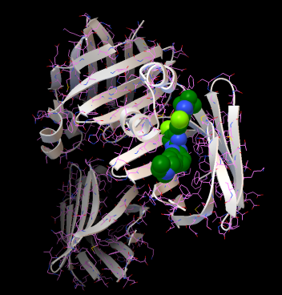

© RNASA-IMEDIR | Created by Cristian R Munteanu
|
COAD-DRD presents the docking results for drug repurposing in colon adenocarcinoma (COAD) by using dynamic molecular structures and plots. Graphical representations show docking signatures of drugs on COAD genes. The drug structures have been downloaded from PubChem and the protein targets from PDB Databank. Affinity energy (AE, kcal/mol units) of the complex is the criteria for stable interaction. The interactions are stronger if the AE is lower (more negative, more attractive interactions). AE values are calculated with the Autodock Vina free software (our group BioCAI HPC cluster). Several sections are presented: Abemaciclib-FABP6 with our proposal for the best drug interaction with gene FABP6 in COAD, Selected drugs that could be used for COAD (with nglview widget for the docking results for the binding modes, all docking files, inside atom contacts and list of interactions), Top 50 best interactions using affinity energies of the drugs to the protein targets, Full by Genes as dynamic plots of all calculated interactions by each gene, Full by Drugs as dynamic plots in order to understand the drug docking signatures on the COAD genes, and Full DB as a dynamic pivot table including graphical plots (all docking results). |

Abemaciclib interaction with FABP6 (PDB ID: 5l8i) |
Results: Combining Machine Learning methods with docking studies, we proposed the best drugs for colon adenocarcinoma. The most interesting interactions have been seen for GLTP - Nilotinib, PTPRN - Venetoclax, VEGFA - Venetoclax and FABP6 - Abemaciclib (gene - drug pairs). Our calculations tested 155 PDB structures with 159 ligands that corresponds to 89 drugs (over 23,000 docking calculations for gene/protein - drug/compound pairs). The use can download all docking files and visualize the complexes for the selected drugs, zoom into the dynamic plots to check any drug-gene interaction, save pictures of the 3D complex, get the entire database as CSV. In addition, the source of these webpages and the scripts that generated the dynamic 3D complexes, plots and tables can be found at the open GitHub repository. Details about the results are under review at international JCR journal. |
© RNASA-IMEDIR | Created by Cristian R Munteanu